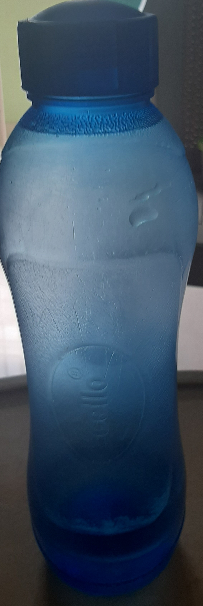

We are using Mobilenet and Google Lens as a Model

Result on Google lens Model
Bottle
Result on MobileNet Model
water bottle
Result on Google lens Model
stump
Result on MobileNet Model
drum stick
Result on Google lens Model
gitaur
Result on MobileNet Model
gitaru
Result on Google len Model
peanut plant
Result on MobileNet Model
soup bowl
google lens is more accurrate than M so 90% for wolf frame 10% for MobileNet this is the case study